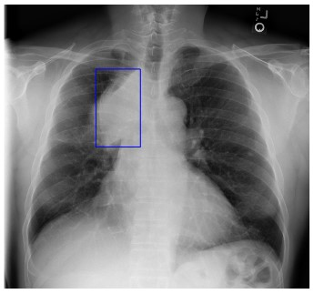
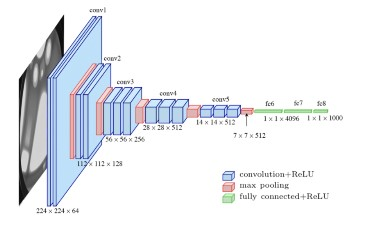

QMIND Project Manager
I served as the project manager for a deep learning team focused on the detection of lung cancer. My responsibilities encompassed team member recruitment, project design, timeline planning, code assignment, and direct involvement in the coding process. Our project's primary objective was to enhance the accuracy and localization of lung cancer detection using neural networks applied to X-ray images. By achieving this, we aimed to reduce the burden on CT scan wait times in traditional diagnosis processes, particularly benefitting remote communities. This approach would allow residents in these areas to receive cancer diagnoses without the need for extensive travel to distant medical facilities for a full CT scan.
An interdisciplinary team, comprising two computer science undergraduates and a health sciences student, employed four distinct neural networks on the image dataset to determine which one delivered the most promising outcomes. The selected neural network techniques included a basic Convolutional Neural Network (CNN), ResNet50, AlexNet, and a VGG-16 Network. Following comprehensive testing, it was evident that the VGG-16 network produced the most favorable results. It achieved an accuracy rate just shy of 75%, which was considered a success, especially given the inherent difficulty in detecting or sometimes even discerning cancer nodes in many of the cancer-positive chest X-ray images, often imperceptible to the human eye.
Following the conclusion of our tests, I developed an application that empowered users to select an image, leveraging the pretrained neural network to predict the presence of cancer in the chosen image. As part of our team, I had the honor of presenting our work at the Canadian Undergraduate Conference on Artificial Intelligence (CUCAI). During the conference, we showcased our paper, displayed our results on a presentation board, and provided a demonstration of our completed application. To access our project in the project look book on the QMIND website, please click on the following link. Additionally, to review the project's code and paper, you can visit our public repository.